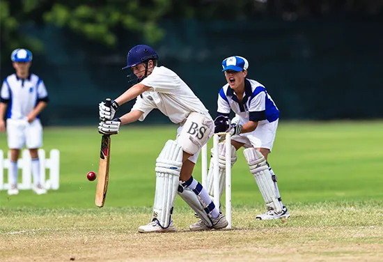
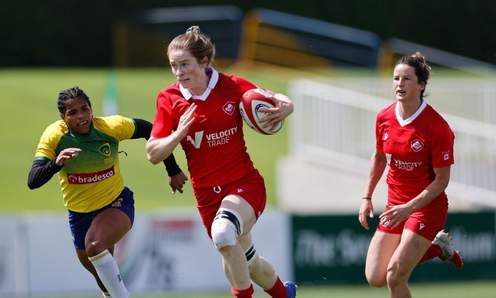
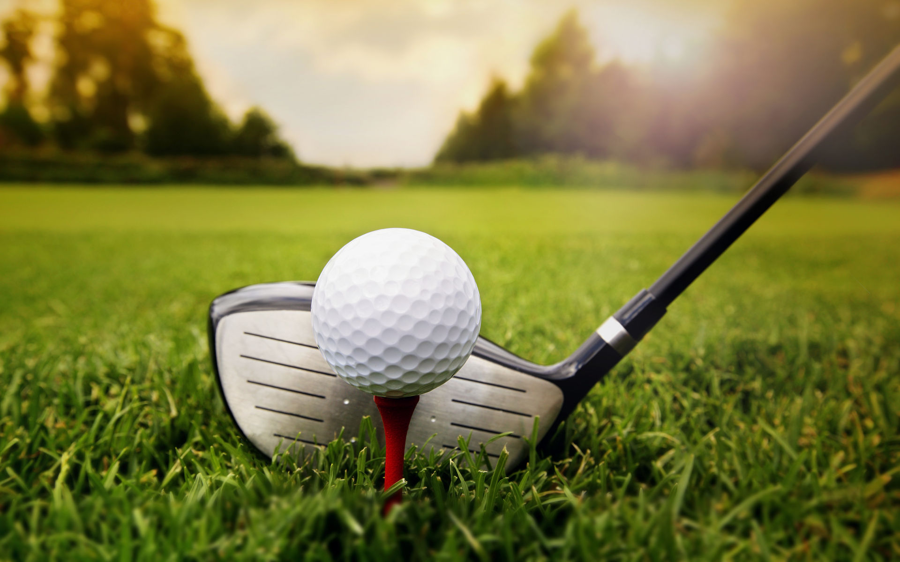
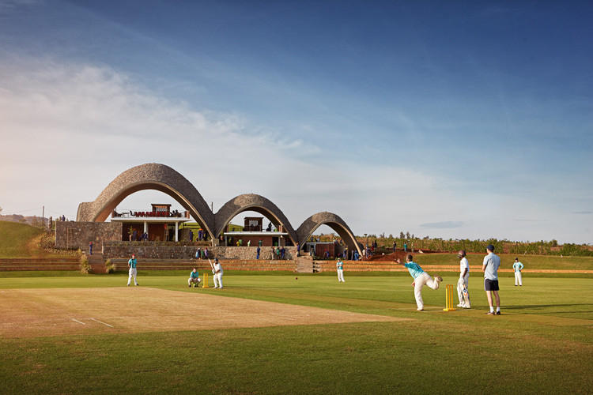
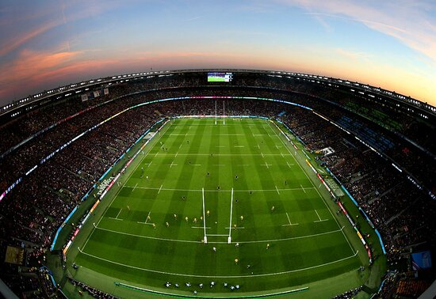
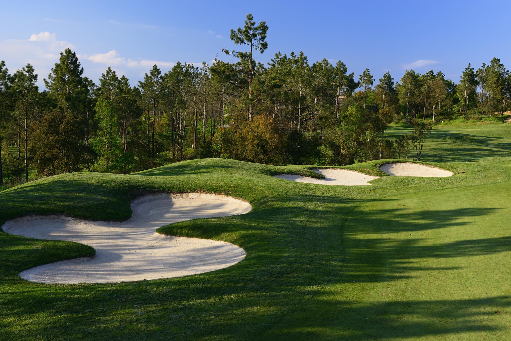

Esportes
Esporte é toda atividade física competitiva com regras e objetivos bem definidos. O objetivo de todas as modalidades esportivas é a superação dos adversários em absoluto respeito às regras.
Aqui você pode aprender sobre os esportes mais populares do mundo
Basquete

Basquete é um esporte coletivo que também pode ser chamado de basquetebol. O nome em português vem do inglês basketball, em que basket quer dizer cesta e ball é bola. A tradução literal de basketball seria bola ao cesto, expressão que também é utilizada como sinônimo para o nome do esporte.
A origem do jogo é norte-americana. O objetivo das duas equipes, de cinco jogadores cada, é acertar a bola em um cesto na extremidade da quadra esportiva. Cada cesta acumula pontos, e a equipe com mais pontos ganha a partida.
Profissionalmente existem as modalidades de basquete masculino e basquete feminino, sendo estas coordenadas por confederações e ligas oficiais nacionais e internacionais. No Brasil existe Confederação Brasileira de Basketball, CBB, a Liga Nacional de Basquete, LNB, que representa o esporte masculino, e a Liga de Basquete Feminino, a LBF.
Em nível mundial existe a FIBA, Federação Internacional de Basquete, a primeira organização do esporte e responsável pelo estabelecimento das regras do jogo.
A liga mais famosa do mundo é a NBA, National Basketball Association, a liga norte-americana de basquete.
Futebol
O futebol é um esporte cujo campo de grama apresenta 105 metros de comprimento por 68 metros de largura, uma padronização da Fifa. Duas equipes compostas por 11 jogadores disputam uma partida em que o objetivo é marcar o máximo possível de gols.
Tênis
O tênis é um jogo de múltiplas contagens parciais, como pontos, games, sets e partidas. Cada lance pode ser rebatido ainda no ar ou após um quique da bola na quadra. O primeiro movimento do jogo é o saque, que deve ser feito do fundo da quadra e enviando a bola para o outro lado da rede, na diagonal.

A Confederação Brasileira de Tênis
Fundada em 19 de novembro de 1955, no Rio de Janeiro, a Confederação Brasileira de Tênis (CBT) completa 60 anos em 2015 sendo composta pelas federações estaduais de Acre, Alagoas, Amapá, Amazonas, Bahia, Ceará, Distrito Federal, Espírito Santo, Goiás, Maranhão, Mato Grosso, Mato Grosso do Sul, Minas Gerais, Pará, Paraíba, Paraná, Pernambuco, Piauí, Rio de Janeiro, Rio Grande do Norte, Rio Grande do Sul, Rondônia, Santa Catarina, São Paulo, Sergipe e Tocantins.
Outros esportes
- 
Criquete.
- 
Rugbi.
- 
Golfe.
Stadiums
- 
Stadium de criquete.
- 
Stadium de rugbi.
- 
Stadium de golfe.
Beisbol na Venezuela
A Liga Venezolana de Béisbol Profesional(também chamada pela sigla LVBP), é a liga profissional de maior nível do beisebol da Venezuela. É formado por oito times regionais que competem entre si no período de Novembro e Janeiro. O campeão garante o título de campeão venezuelano e representa o país na Série do Caribe, um torneio continental que envolve equipes das ligas de inverno da Colômbia, México, Panamá, Porto Rico e República Dominicana.